转移计数行（TCL）位并行存内计算零基础精讲：用“数边沿”代替“数 1” A 28nm 106.85TOPS/W and 77.68TFLOPS/W CIM Macro with Stage-Wise-Enabled Lossless Compressors Based on Sign-Bit-Embedded Transition-Counting-Lines for Edge-AI Devices（ISSCC 2026 · Paper 30.4）
这是一篇“位并行”数字 SRAM CIM 论文，来自西安电子科技大学。位并行 CIM 直接按 8b 完整字做乘法（不用逐位串行），但面临“位列加法布线拥塞、符号位处理费面积、加法树空转费电”三大难题。论文用一个很巧妙的电路——TCL（Transition-Counting-Line，转移计数行）逐一化解：
- 数边沿代替数 1：把一列的位积串成链，让一个跳变沿沿着链传播，每遇到一个“1”就取反一次 → 计数器数沿的个数 = 列和！无损、零加法器、位积为 0 时完全静止（稀疏自适应）；
- 总线 TCL 嵌入符号位扩展：2 的补码有符号 MAC 的符号扩展直接“借用”TCL-14 的 MMU，只多 2.95% 面积、零额外延迟；
- 10 相分阶段使能：一个周期内 Ph0~7 逐位做乘法、Ph8 才开合并加法器、Ph9 才开加法树 → 加法器不空转 → 能效 +42%。
28nm 实测：INT8 106.85 TOPS/W、BF16 77.68 TFLOPS/W、面积效率 1.24 TFLOPS/mm²。
- 乘法 = 外积 + 位列求和：8b×8b 乘法产生 64 个“位积”（每对输入位相乘），按斜线分成 15 个“位列”（同移位位置）。把每个位列里的 1 数出来，就是乘法的部分和。所以“数 1 的个数”就是乘法的核心运算。
- 数 1 可以不靠加法器：本论文的妙招是把一列的位积串成一条链，一个电平“边沿”从头走到尾，每经过一个“1”就翻转一次。翻转了几次 = 有几个 1 = 列和。计数器（CNT）数沿即可——这比 8 输入加法器省太多晶体管。
- 让电路“按需工作”= 省电：10 相发生器把“乘法（Ph0~7）”“合并加法（Ph8）”“树加法（Ph9）”拆成时间上的三个阶段，没轮到的电路被强制接地不翻转——CMOS 动态功耗 ∝ 翻转次数，不翻转就不耗电。
§0.1摘要逐句精读
| 原文（摘录） | 人话解释 |
|---|---|
| “bit-parallel CIM directly matches the data format of computing systems, eliminating the parallel-to-serial conversion and specialized weight mapping strategies… It can also reduce the MSB toggle rate” | 位并行 CIM 直接按完整字计算：省掉串并转换、省掉特殊权重映射，还因为高位（MSB）不常翻转而省功耗。 |
| “(1) For 8b MAC, bit-parallel CIM suffers from routing congestion… A tradeoff between throughput and area overhead is required. Approximate compressors… with accuracy loss” | 挑战 1：8b 位列加法布线拥塞；多周期 INT4 或 ADC 压缩都要在吞吐/面积间取舍；近似压缩器丢精度。 |
| “(2) Handling sign bits for 2's-complementary MAC… demands large extra area or additional cycles” | 挑战 2：2C 有符号 MAC 的符号位处理要么费面积、要么费周期。 |
| “(3) intermediates induce unnecessary toggling in high-fan-in adders, resulting in power inefficiency” | 挑战 3：乘法/压缩的中间结果让高扇入加法器无谓翻转，功耗浪费。 |
| “106.85TOPS/W for INT8 and 77.68TFLOPS/W for BF16” | 实测：INT8 106.85 TOPS/W、BF16 77.68 TFLOPS/W（28nm）。 |
§0.2论文的核心贡献清单
- TCL 无损位列压缩器：以“转移计数”实现 8-to-4 无损位列加法，晶体管数最小化、稀疏自适应（0 不翻转）；
- 总线 TCL 符号位嵌入：Pm7 被 TCL-7~14 复用，2C 有符号 MAC 只多 2.95% 面积、零额外延迟；
- 10 相分阶段使能：MMU（Ph0~7）→ 合并加法器（Ph8）→ 加法树（Ph9）分时工作，能效 +42%、面积效率仅 −6%；
- 实测成绩：INT8 106.85 TOPS/W、BF16 77.68 TFLOPS/W、1.24 TFLOPS/mm²、FoM1 提升 1.25–2.88×、FoM2 提升 2.20–19.9×。
完全零基础：按 01→09 顺序读，重点玩 3 个交互仿真、看 3 个视频，约 60 分钟。已经懂数字 CIM 的：从 §3（外积）和 §4（TCL 原理）开始，这是本文最巧妙的电路创意。
§1背景：位串行 vs 位并行 CIM
数字 SRAM CIM 做“8b×8b 乘法”有两条路线：
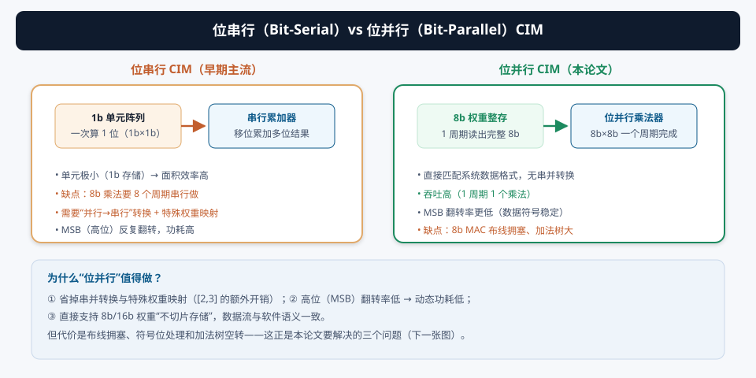
- 位串行（Bit-Serial）：单元只存/算 1 位，8b 乘法拆成 8 个 1b 周期串行完成。优点是单元极小、面积效率高；缺点是① 需要“并行→串行”转换电路和特殊权重映射；② 高位（MSB）每周期翻转、功耗高；③ 吞吐低（1 周期只算 1 位）。
- 位并行（Bit-Parallel，本文）：8b 权重整存，1 周期完成 8b×8b。优点：直接匹配软件数据格式（无串并转换）、MSB 翻转率低、吞吐高；缺点：位列加法布线拥塞、符号位处理难、加法树空转。
有符号数据的高位（符号位和附近位）在相邻数据之间通常变化很小（比如 0.0012 → 0.0013，高位都是 0）。位串行方案把每个位都平等地扫一遍，高位也跟着翻转；位并行方案一次读完整字，高位本来就不动 → 动态功耗天然更低。这是位并行在“功耗账”上赢的第一分。
§2位并行 CIM 的三大挑战（论文的问题定义）
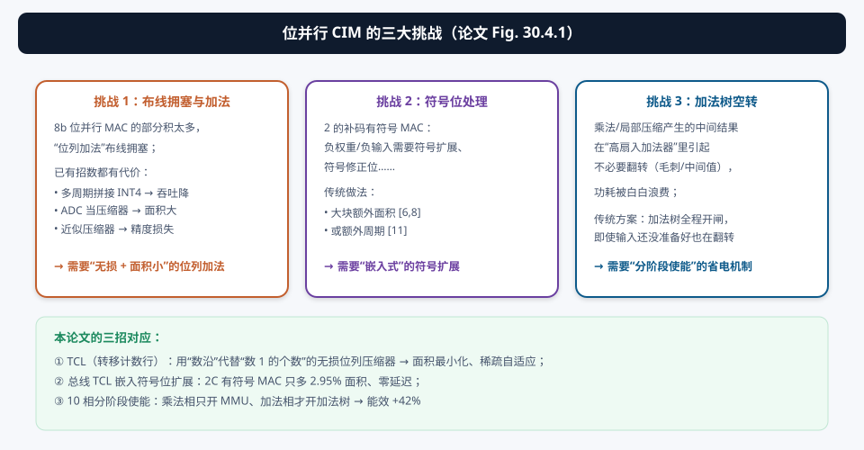
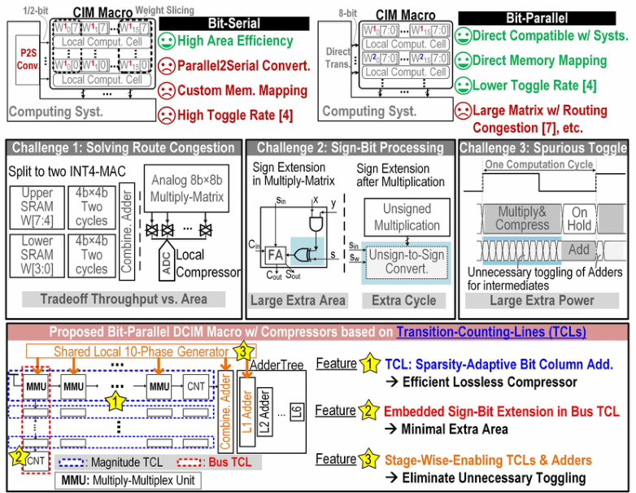
| 挑战 | 现有方案及其代价 | 本文对策 |
|---|---|---|
| ① 布线拥塞 + 位列加法 | 多周期 INT4 拼接（吞吐降）· ADC 压缩器（面积大）· 近似压缩器（丢精度） | TCL 无损压缩：数沿代替数 1，面积最小、无损、稀疏自适应 |
| ② 符号位处理 | 额外符号阵列（面积大）· 额外周期（吞吐降） | 总线 TCL 嵌入：Pm7 复用做符号扩展，+2.95% 面积、零延迟 |
| ③ 加法器空转 | 加法树全程开闸，毛刺白烧电 | 10 相分阶段使能：Ph8/Ph9 才开加法 → 能效 +42% |
§3核心概念：外积与位列加法——乘法器的“位级解剖”
要理解 TCL，先看 8b×8b 乘法在“位级”长什么样。两个 8b 数相乘，先做 外积（outer product）：
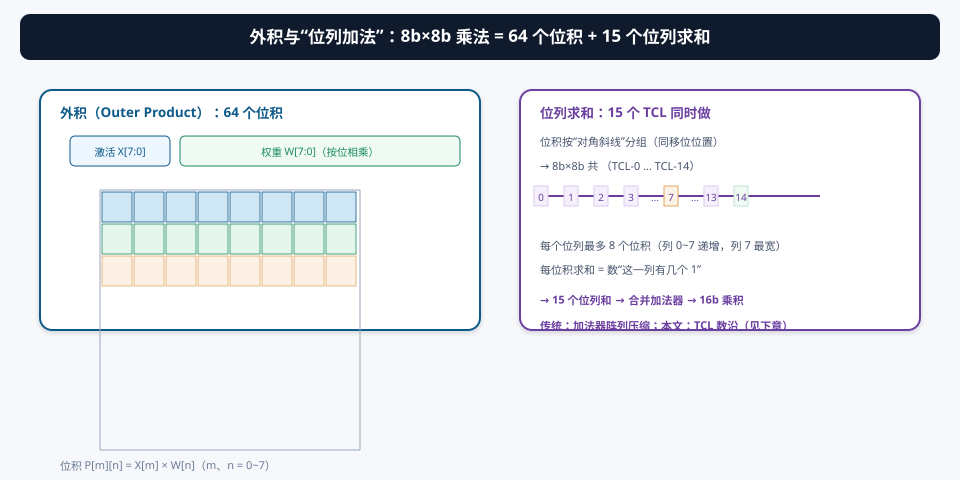
于是乘法变成两件事：
- 生成位积：P[m][n] = X[m] × W[n]，就是“与门”（1×1=1 仅当两者都是 1）；
- 位列求和：把每一列（斜线）上的位积加起来——这一列有几个 1，列和就是几。第 k 列最多有 8 个位积（中间列最宽）。
传统数字乘法器用 压缩器（compressor）树（如 CSA 3:2 压缩器）把每列的 1 逐层加起来——8 个输入要 3~4 级压缩 + 进位传播。本论文的 TCL 换个思路：把“有几个 1”编码成“一个边沿翻转几次”，用一个计数器数沿——这就是下章的主角。
§4创新①：TCL（Transition-Counting-Line）—— 用“数边沿”代替“数 1”
4.1 TCL 结构与工作规则
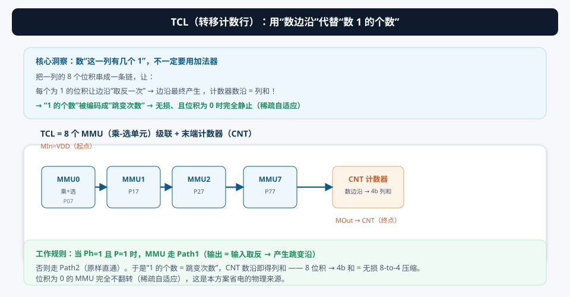
每个 MMU（Multiply-Multiplex Unit，乘-选单元）干两件事：
- 乘法段：算位积 Pmn = X[m] × W[n]（就是个与门）；
- 多路选择段：当 Phk=1 且 Pmn=1 时走 Path1：输出 = 输入取反（产生一个跳变沿）；否则走 Path2：原样直通。
所有 MMU 的多路选择段级联成一条链：第一个 MMU 的输入 MIn 接 VDD（高电平起点），最后一个 MMU 的输出 MOut 接计数器 CNT。于是：
一个高电平从链头出发，每经过一个“位积=1”的 MMU 就被取反一次（高→低 或 低→高），经过“位积=0”的 MMU 则原样通过。最终到达 CNT 的跳变沿个数 = 这一列里 1 的个数 = 列和。CNT 把 8 个输入位编码成 4b 计数值 → 这就是“8-to-4 无损压缩”。
4.2 工作示例与交互仿真
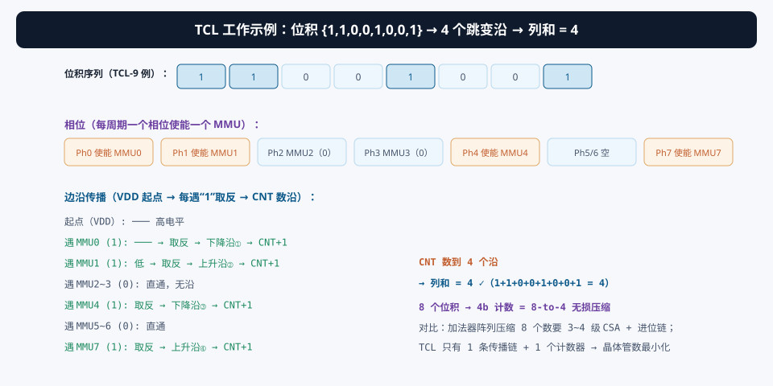
注意相位的作用：10 相发生器（§6）让 Ph0~Ph7 每个相位只使能一个 MMU（TCL-9 例：Ph0 使能 MMU0、Ph1 使能 MMU1……）。这样边沿在链上的传播是串行、分时的——每个相位恰好推进一格，时间上可预测，CNT 在每个相位结束后采样一次。
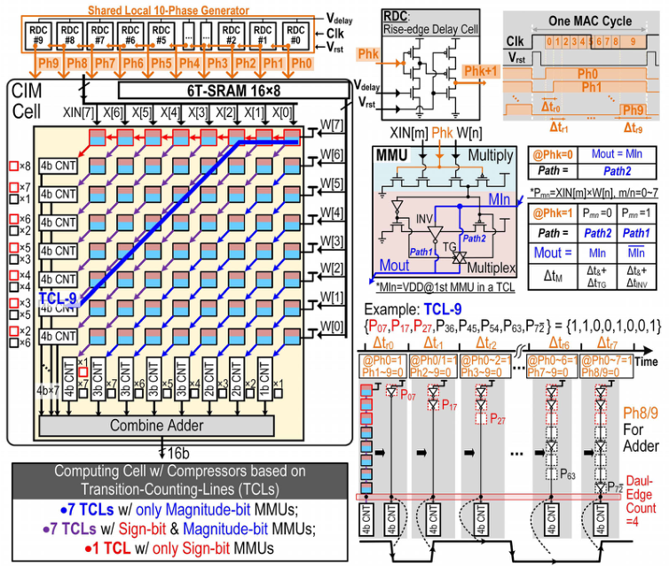
§5创新②：总线 TCL 嵌入符号位扩展 —— 2C 有符号 MAC 只多 2.95% 面积
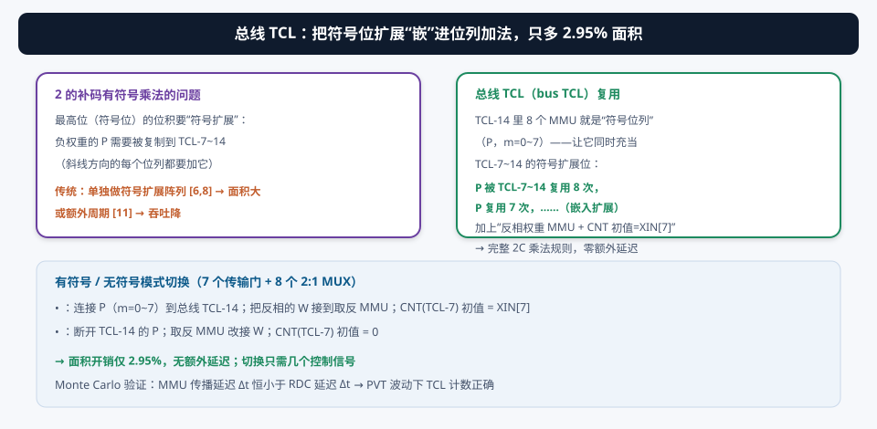
2 的补码有符号乘法有个“讨厌的尾巴”：符号位扩展。负权重的最高位位积 Pm7 必须被“复制”到更高的每一个位列（因为符号位代表负数，要扩展成全 1 或参与修正）。传统做法是单独做一套符号扩展电路（面积大）或加周期（吞吐降）。
本文发现：TCL-14 的 8 个 MMU 本来就是“符号位列”的压缩器（它负责 Pm7，m=0~7 的求和）。让这些 MMU 的输出同时接入 TCL-7~14 的链——即“总线 TCL（bus TCL）”，就实现了符号扩展的嵌入：
- P07（m=0 的符号位积）需要参与 TCL-7~14 共 8 个列的求和 → 复用到 8 个 TCL；
- P17 → 复用 7 次（TCL-8~14）；……以此类推，正好是 2C 乘法里符号扩展的规律；
- 再配两个小机关：反相权重 Wn' 接到“取反 MMU”（处理负权重的符号）、TCL-7 的 CNT 初值设为 XIN[7]——补全 2C 乘法的修正项。
切换只需要 7 个传输门 + 8 个 2:1 多路选择器：有符号时连接 Pm7、CNT 初值 = XIN[7]；无符号时断开、CNT 初值 = 0。总面积开销仅 2.95%，且零额外延迟。论文还用 10k 次 Monte Carlo 仿真验证：MMU 传播延迟恒小于 RDC 延迟 → PVT 波动下 TCL 计数不会出错。
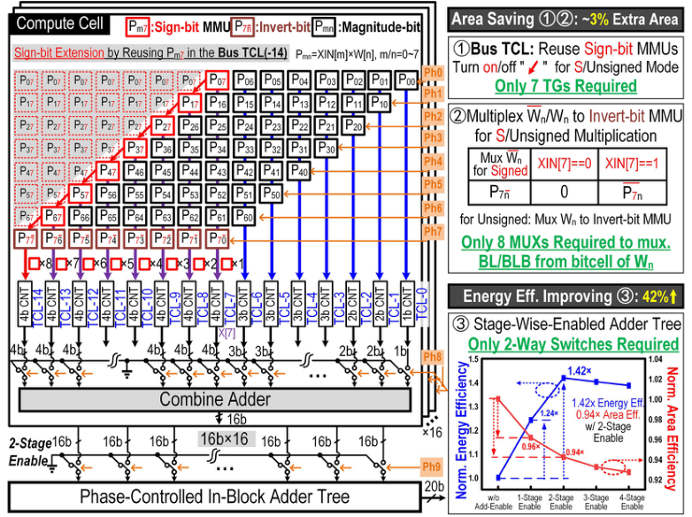
§6创新③：10 相分阶段使能 —— 加法器不再空转
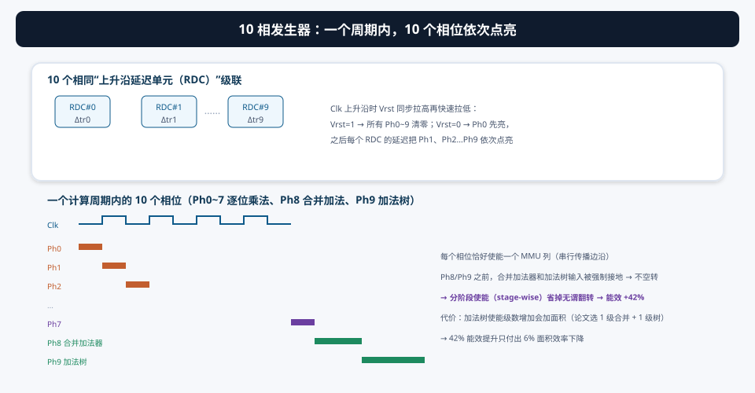
10 相发生器由 10 个完全相同的 上升沿延迟单元（Rising-edge Delay Cell, RDC）级联而成：Vrst 随主时钟上升沿同步拉高（清零所有相位）再快速拉低；Vdelay 控制每个 RDC 的输入-输出延迟。Vrst 释放后 Ph0 先亮，经过 RDC#0 的延迟 Δtr0 后 Ph1 亮……依次传播到 Ph9。于是一个时钟周期内产生了 10 个等间隔相位。
这 10 个相位把“一个 8b×8b 乘法”拆成时间上的三幕：
| 相位 | 使能的电路 | 干什么 |
|---|---|---|
| Ph0~Ph7 | MMU（每个相位一列） | TCL 逐位传播边沿（乘法部分） |
| Ph8 | 合并加法器（Combine Adder） | 把 15 个位列和合并成 16b 乘积 |
| Ph9 | 块内加法树（In-Block Adder Tree） | 把 16 个 CIM 单元的乘积相加 |
- 加法器是“高扇入”电路：输入一有风吹草动（毛刺、中间值）就翻转，而乘法阶段（Ph0~7）的输入根本还没就绪——传统方案这段时间白烧电；
- 分阶段使能：Ph8/Ph9 之前，用“单刀双掷开关”把合并加法器和加法树的输入强制接地 → 输入不变，输出不翻转 → 零动态功耗；
- 论文仿真了“加法树使能级数 vs 面积/能效”：块内加法树有 4 级，每级都能加相位开关（越省电但越费面积）。折中选合并加法器 1 级 + 块内加法树 1 级 → 能效 +42%、面积效率只 −6%（帕累托最优点）。
§7系统架构与数据流：4 个 bank、两种模式
7.1 宏架构
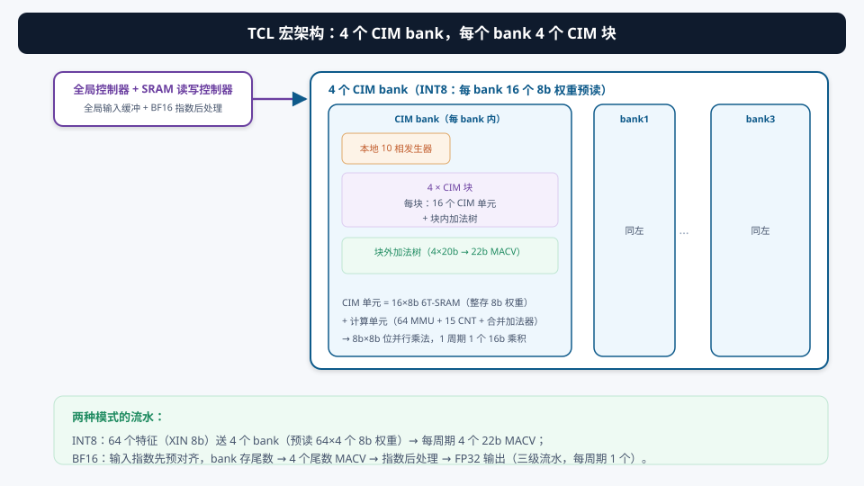
- CIM 单元：16×8b 6T-SRAM（整存不切片的 8b 权重）+ 计算单元（64 个 MMU + 15 个 CNT + 合并加法器）；
- 数据路径：16 个 CIM 单元各出 1 个 16b 乘积 → 块内加法树（16×16b → 20b）→ 块外加法树（4×20b → 22b MACV）；
- 10 相发生器：每个 bank 本地一个，驱动本 bank 所有 TCL 和加法树分阶段工作。
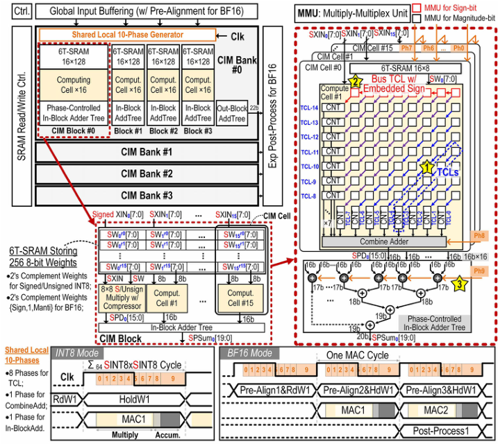
7.2 INT8 / BF16 两种模式
| 模式 | 输入 | bank 内容 | 输出 | 流水 |
|---|---|---|---|---|
| INT8 | 64 个特征（8b） | 64×4 个预读 8b 权重 | 每周期 4 个 22b MACV | 直接乘累加 |
| BF16 | BF16（指数预对齐 [1]） | 预对齐权重的尾数 | 4 尾数 MACV → FP32 | 三级流水（每周期 1 个 FP32） |
BF16 的尾数乘法（7 位尾数 + 隐含位 ≈ 8b 有效位）在预对齐后就是普通的 8b×8b 无符号乘法——完全复用 INT8 的 TCL 计算单元，只需外围加“指数预对齐 + 指数后处理”两级。这就是“一个宏支持 INT8 和 BF16”的硬件代价极小化的原因。
§8实测与对比：28nm 芯片的成绩单
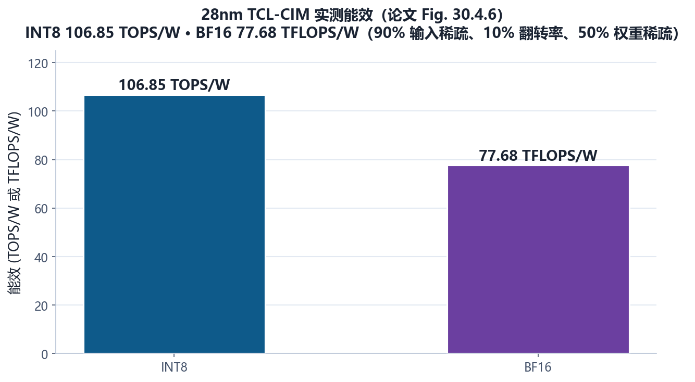
- 访问时间：4.1 ns @ 0.9V（BF16 输入/权重，FP32 输出）；
- 面积效率：1.24 TFLOPS/mm²（BF16，0.55V/0.9V）；
- 工艺：28nm CMOS，32kb 宏；
- 精度：BF16 模式 ViT-B @ImageNetV2 81.05%、ResNet50 @ImageNetV2 81.19%。
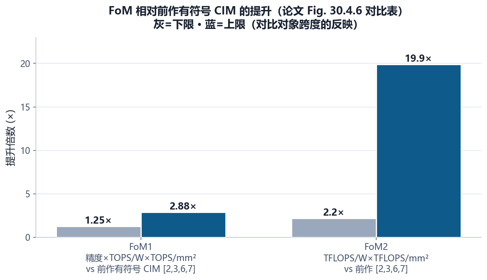
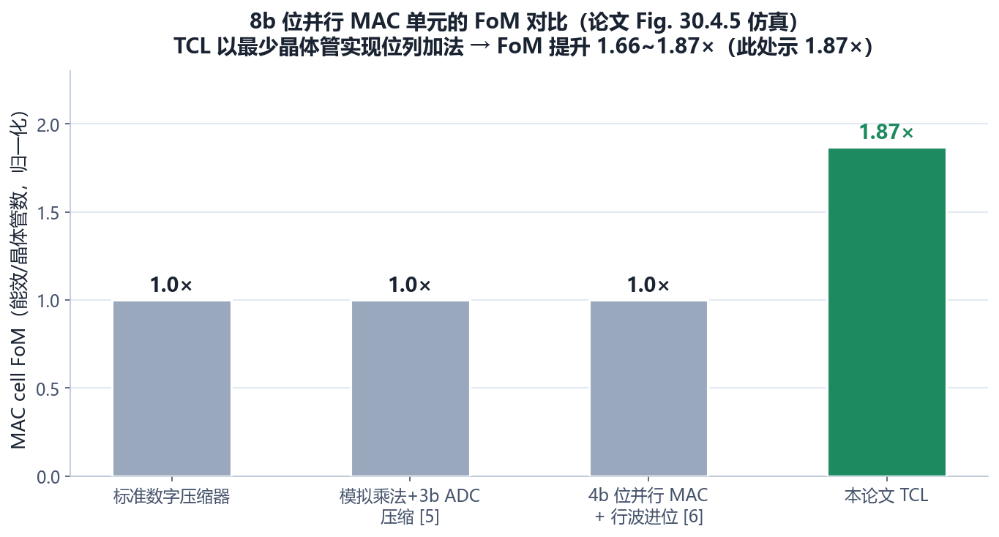
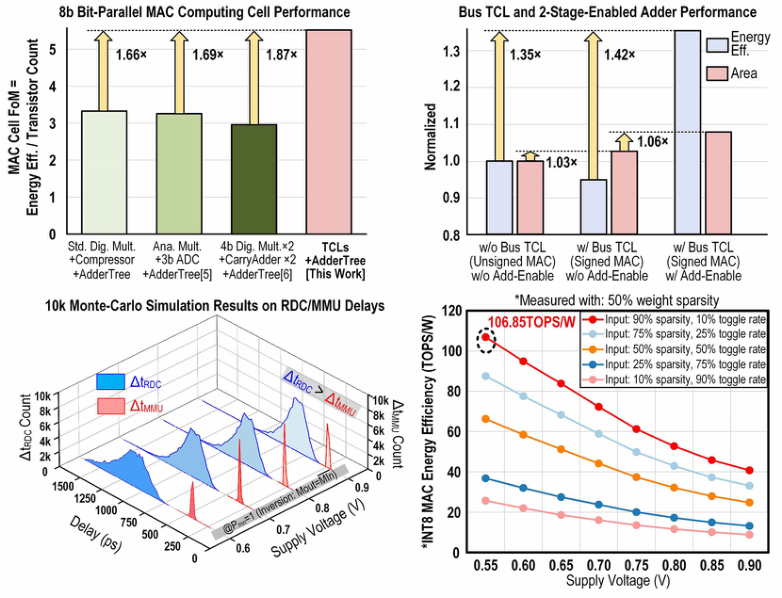
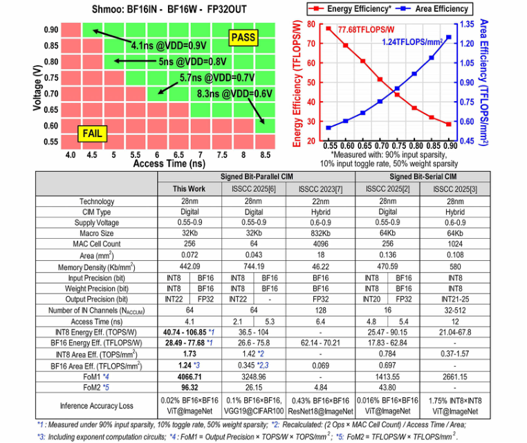
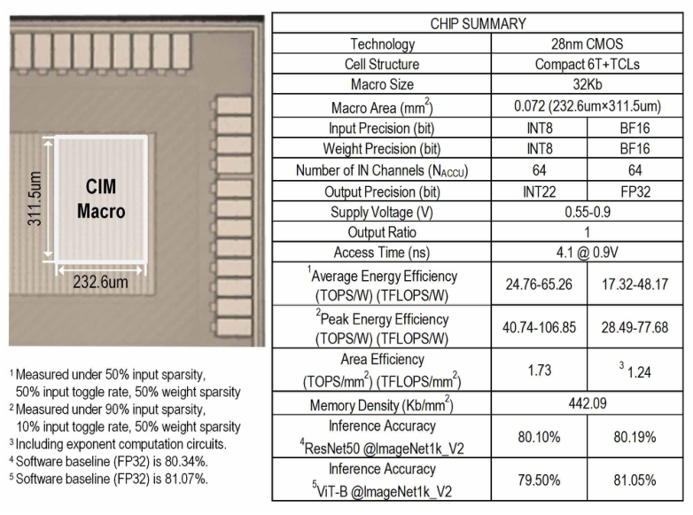
① 能效数字是在“90% 输入稀疏 + 10% 翻转率 + 50% 权重稀疏”的理想活动率下测的——稀疏数据本来就不耗电，这个条件对 TCL 这类“稀疏自适应”电路特别有利，对比时先看条件；② FoM2 提升 2.20–19.9× 跨度极大，说明对比对象跨度也大（不同位宽、不同架构），不是单一相对值；③ 81% 的 ViT-B/ResNet50 精度是“该宏在 BF16 模式能跑出的精度”，用于证明精度无损，不代表网络极限精度。
§9未来研究方向 · 术语表 · 参考资料
9.1 未来研究方向
- TCL 的位宽扩展与通用化：本文 TCL 做 8b×8b 的 15 位列。扩展到 INT12/INT16（23/31 位列）、FP16 尾数、块浮点（block FP），TCL 的“数沿”机制是否依然划算？位数越多，链越长，单周期 10 相是否够？这是最自然的延伸；
- 多相发生器省电化的极限：10 相由 RDC 链产生，相位间隔是“模拟延迟”而不是时钟 → 有 PVT 敏感性（论文用 Monte Carlo 验证了裕量）。更先进的方案：用更少相位、或把相位数量做成可配置（乘法位数可调）；
- 稀疏计算深度融合：TCL 对“位积为 0”天然省电，但激活/权重“整字为 0”的跳过（skip）还没有。在 TCL 链上加“整列全零检测”，跳过全零列，能效还能再上一个台阶；
- 与浮点/训练结合：本文 BF16 靠外围指数对齐+后处理。能否把 TCL 扩展到“按需对齐”的浮点（像 01 号论文那样内嵌对齐）？训练场景的梯度计算（符号变化频繁）对 TCL 的稀疏假设是挑战；
- 编译器与活动率感知调度：能效强依赖输入稀疏/翻转率。做一个“按数据分布选模式/选电压”的运行时调度器（稀疏层低压高能效、稠密层高压保吞吐），把 TCL 的稀疏红利变成系统级收益；
- 与 3D/近存结合：TCL 计算单元面积小（晶体管最少），非常适合作为 3D 近存（08 号论文路线）逻辑层里的“计算块”——两个方向可以合成一个大芯片。
9.2 术语表
- 位串行（Bit-Serial）
- 按位逐周期计算，单元小但需串并转换、MSB 翻转多。
- 位并行（Bit-Parallel）
- 整字一次计算，直接匹配数据格式，MSB 翻转率低。
- 外积（Outer Product）
- 两个数的各位两两相乘得到位积矩阵；8b×8b → 64 个位积。
- 位列（Bit Column）
- 同移位位置的位积集合；8b×8b 共 15 个位列。
- 位列加法（Bit-Column Addition）
- 把一列位积求和（数 1 的个数），是乘法器的核心。
- 压缩器（Compressor）
- 把多个输入位压缩成和与进位的电路（如 3:2 CSA）；TCL 是另一种“无损压缩”。
- TCL（Transition-Counting-Line，转移计数行）
- 本文核心：级联 MMU + 计数器，用跳变沿个数编码列和。
- MMU（Multiply-Multiplex Unit）
- 乘-选单元：与门算位积 + 选择器决定取反/直通。
- CNT（Counter）
- 计数器，数跳变沿得列和（4b 输出）。
- 8-to-4 无损压缩
- 8 个位积 → 4b 列和，无精度损失。
- 总线 TCL（Bus TCL）
- TCL-14 的 MMU 复用到 TCL-7~14 实现符号位扩展。
- 符号位扩展（Sign Extension）
- 2C 负数的最高位复制到更高位；本文嵌入总线 TCL 实现。
- RDC（Rising-edge Delay Cell）
- 上升沿延迟单元；10 个级联组成 10 相发生器。
- 10 相（10-Phase）
- 一个计算周期的 10 个相位：Ph0~7 乘法、Ph8 合并、Ph9 加法树。
- 分阶段使能（Stage-Wise Enabling）
- 按相位开关电路，未轮到就强制接地 → 能效 +42%。
- MACV（MAC Value）
- 乘累加结果（本文 22b）。
- 稀疏自适应
- 输入为 0 时电路不翻转（TCL 的天然属性）。
9.3 参考资料
- L. Feng, Y. Liu, L. Wu, D. Li, Z. Zhu, “A 28nm 106.85TOPS/W and 77.68TFLOPS/W CIM Macro with Stage-Wise-Enabled Lossless Compressors Based on Sign-Bit-Embedded Transition-Counting-Lines for Edge-AI Devices,” ISSCC 2026, Paper 30.4. DOI: 10.1109/ISSCC49663.2026.11409281
- X. Wang et al., “A 28nm 17.83-to-62.84TFLOPS/W Broadcast-Alignment Floating-Point CIM Macro with Non-Two's-Complement MAC…,” ISSCC 2025, pp. 254-255.（前作 [2]，本系列 01 号论文）
- X. Chen et al., “A 28nm 64kb Bit-Rotated Hybrid-CIM Macro with an Embedded Sign-Bit-Processing Array…,” ISSCC 2025, pp. 260-261.（前作 [3]）
- H. Fujiwara et al., “A 3nm, 32.5TOPS/W, 55.0TOPS/mm²… INT12 × INT12…,” ISSCC 2024, pp. 572-573.（数字 CIM [4]）
- Y. Yuan et al., “A 28nm 72.12TFLOPS/W Hybrid-Domain Outer-Product Based Floating-Point SRAM CIM Macro with Logarithm Bit-Width Residual ADC,” ISSCC 2024, pp. 576-577.（ADC 压缩对比 [5]）
- Y. Yuan et al., “A 28nm 192.3TFLOPS/W Accurate/Approximate Dual-Mode-Transpose Digital 6T-SRAM CIM Macro for Floating-Point Edge Training and Inference,” ISSCC 2025, pp. 258-259.（前作 [6]）
- P.-C. Wu et al., “A 22nm 832Kb Hybrid-Domain Floating-Point SRAM In-Memory-Compute Macro…,” ISSCC 2023, pp. 126-127.（前作 [7]）
- D. Wang et al., “DIMC: 2219TOPS/W 2569F²/b Digital In-Memory Computing Macro in 28nm Based on Approximate Arithmetic Hardware,” ISSCC 2022, pp. 266-267.（近似压缩器 [10]）